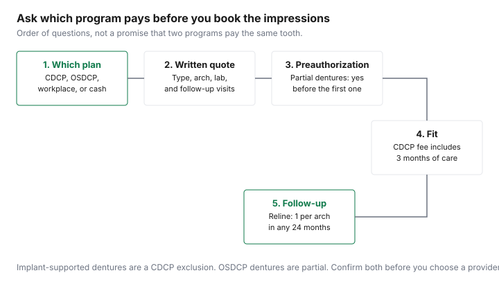

Healthcare · Canada
Dentures in Canada: What They Cost, Denturist vs Dentist, and Which Public Programs Help

A denture quote is several decisions sold as one number: full or partial, one arch or two, a standard base or an immediate denture, a denturist or a dentist, and which public program will look at the code. This page does not print a Canadian price for any of those choices. A range sometimes quoted to seniors was not on a professional or government page cited here, so it is not repeated here. What is here is who is allowed to do the work in Ontario, what the Canadian Dental Care Plan and the Ontario Seniors Dental Care Program actually say about dentures, and the questions that make two quotes comparable. It is not dental advice. The person who looks at your mouth decides the treatment. You decide which written quote matches that treatment.
Key takeaways
- No clinic fee for a full, partial, or implant-retained denture is listed here. Cost follows the type, the lab, the number of arches, and the visits after insertion.
- In Ontario, a registered denturist can design, make, repair, reline, and fit removable dentures, including prostheses over implants. Other provinces regulate the title on their own statutes. This page does not copy a scope of practice it does not cite.
- The CDCP covers removable complete and partial dentures under frequency rules. Implant-supported dentures and all implant-related procedures are exclusions. A reline is once per arch in any 24 months.
- Ontario's seniors program, updated 31 July 2026, says dentures are partially covered and sends you to the local public health unit for the portion. Income limits are $25,480 single and $42,290 couple. The CDCP does not block that application.
- The Denturist Association of Ontario says the average life of a denture is about five to seven years. That is a professional-association statement, not a replacement order from a plan.
Full, partial and implant-retained dentures: what each involves and how long they last
A complete denture replaces an arch with no remaining teeth. A partial denture replaces some teeth and uses the others for support.
An immediate denture is made to go in at the time of extractions. An overdenture sits on retained roots or, in private care, on implants. The CDCP treats those words as different codes with different preauthorization rules. A quote that says only "dentures" is not a quote you can compare.
The Denturist Association of Ontario's denture FAQ says dentures do not last indefinitely. Teeth and the base wear and stain. The tissues keep changing, so the denture has to be adjusted, relined, or remade, and the timing depends on habits, tolerance, and how long you have worn dentures. The association says the average life is about five to seven years. Its reline page says dentures should be replaced every five to seven years to restore fit, function, and appearance, and that a reline adds base material to the tissue side without changing the look of the teeth. That is the lifespan figure used here, because it comes from a professional body. It is an average they publish, not a guarantee, and not a CDCP replacement schedule.
Implant-retained dentures are a different product. The College of Denturists of Ontario includes fabrication of removable prostheses over implants in the work a denturist is educated to do. The CDCP benefits guide, page details 31 March 2026, says complete and partial dentures supported by implants, and all implant-related procedures, are exclusions. A quote that bundles implants with a denture is a private bill for the implant portion even when a removable denture might be covered on its own. Ask the provider to split those lines before you compare a denture-only plan with an implant plan. No price for either line is listed here.
Denturist vs dentist: who does what, by province
Ontario is the province this section can describe from a regulator's page. The College of Denturists of Ontario says the Denturism Act, 1991 sets the scope as assessment of arches missing some or all teeth, and the design, construction, repair, alteration, ordering, and fitting of removable dentures.
The college's profession page says a denturist provides that care directly to the public: impressions, full and partial dentures, fit and modification, relines, rebases, repairs, and removable prostheses over implants. To use the title, a person completes an approved program, passes the college's qualifying examination, and registers. The public register is how you check a name. A business card is not registration.
A dentist is a different regulated profession and can also plan and deliver dentures, often with a dental laboratory in the loop. This page does not say one is clinically better, and it does not say one is cheaper. No fee guide comparison between the two professions is listed here. The College of Denturists notes that a 2025 proposal to update the Ontario scope was sent to the Ministry of Health and was still a proposal on the page as of 27 September 2026. Do not treat a proposed scope as the current one. Outside Ontario, look up that province's denturist college or the statute that protects the title. A national sentence about "denturists in every province" is not confirmed here, so it is not made.
Whoever does the work, ask whether the fee includes the laboratory, the insertion, and a period of adjustments. Under the CDCP, the fee for complete and partial dentures includes a three-month period of post-insertion care, and adjustments on the same day as delivery, repair, reline, rebase, or tissue conditioning are included in those fees. A private quote may not use that rule. Write the number of adjustment visits into the quote so a lower professional fee is not paired with a second bill for every sore spot.
What public programs cover: CDCP, Ontario Seniors Dental Care and other provincial seniors' programs
The Canadian Dental Care Plan coverage page lists removable prosthodontic services: complete dentures, including standard and temporary dentures; repairs, relines, and rebases; lining to condition tissues; complete immediate dentures and overdentures, which require preauthorization; and partial dentures, which require preauthorization. Your co-pay tier still applies to the CDCP established fee, and a provider may charge above that fee. Read that split on the CDCP bill guide. Whether you qualify at all is the eligibility guide.
The benefits guide adds the clock. Standard complete dentures do not require preauthorization and are covered once per arch in any 96 months, which the guide also states as eight years. Transitional, provisional, and immediate complete dentures are once in a lifetime per arch. Partial cast dentures are once per arch in any 96 months, and the initial placement needs preauthorization. Partial acrylic dentures are once per arch in any 60 months, and the initial placement needs preauthorization. A replacement of a partial denture the CDCP already paid for does not need a new preauthorization if it is inside the frequency rule. A denture you already own, made outside the plan, does not count as that prior CDCP denture. The plan will not cover a new denture within 24 months of a reline or rebase. Repairs and additions are once per arch in any 12 months. None of those rules is a dollar amount.
The Ontario Seniors Dental Care Program, page updated 31 July 2026, is for people 65 and older who live in Ontario, with annual net income of $25,480 or less as a single senior or $42,290 or less as a couple, and with no other dental benefits except the CDCP. Private insurance, Ontario Works dental coverage, the Ontario Disability Support Program, and Non-Insured Health Benefits block it. Routine care is described as covered. Dentures are in a separate sentence: prosthodontic services, including dentures, will be partially covered, and you should speak to the local public health unit. No percentage was printed. Coverage ends on 31 July each year. The comparison guide is the side-by-side. The turning-65 guide is the year those applications start to matter. Other provinces have their own seniors' dental programs. This article does not describe those programs’ income tests or denture rules; check with each program. Ask that province's health ministry before you assume Ontario's partial coverage exists there.
| Type | What it is | Lifespan cited | CDCP | OSDCP |
|---|---|---|---|---|
| Standard complete | Replaces a full arch. | Denturist Association of Ontario: about five to seven years on average, for dentures generally. | No preauthorization. Once per arch in any 96 months. Fee includes 3 months of post-insertion care. | Described as partially covered. Percentage not printed. Ask the public health unit. |
| Partial acrylic or cast | Replaces some teeth. | Same association average. Not a separate lifespan on the page. | Initial placement needs preauthorization. Acrylic: 60 months per arch. Cast: 96 months per arch. | Same partial-coverage sentence. No separate partial rule was printed. |
| Immediate or transitional | Placed around extractions, or as a temporary denture. | Not given a shorter official life on the association page. | Complete immediate and transitional: once in a lifetime per arch. The fee includes tissue conditioner, not the later processed reline. | Not broken out on the Ontario page. |
| Implant-supported | A denture retained by implants. | Not stated. | Excluded, including implant-related procedures. | Not stated as covered. Do not assume the partial-denture sentence includes implants. |
Relines, repairs and replacements: the costs that come after
The association describes a reline as new base material on the tissue side so the denture fits after the ridge changes. It does not replace worn teeth.
A repair is for a break, a lost tooth on the denture, or a clasp. The association says most repairs can be done in a day and warns against household glue. It does not print a fee. Under the CDCP, reline and rebase do not need preauthorization and are covered once per arch in any 24 months. Tissue conditioning is the same 24-month frequency. Repairs and additions are once per arch in any 12 months. Adjustments done the same day as those services are included in the fee. A new denture is not covered within 24 months of a reline or rebase, so a reline is not a free reset of the replacement clock. It pauses a new-denture claim.
If a quote for a new denture is large, ask what a reline would include and what it would not fix. Worn teeth stay worn after a reline. A broken denture that is also eight years old may be a replacement conversation under the CDCP's 96-month rule, not only a repair. The plan will consider requests above the frequency limits through preauthorization, except for complete provisional, transitional, and immediate dentures, which are once per lifetime. Bring the date the current denture was inserted. If the CDCP did not pay for that denture, the guide says the plan does not treat the new one as a replacement for frequency purposes, and a partial still needs preauthorization as an initial placement.
Timing big work with benefit maximums and the medical expense tax credit
The CDCP is not a workplace dental maximum. It is a frequency rule and a co-pay on its own fee.
A workplace plan, if you still have one, is a different contract, and access to that plan can affect CDCP eligibility. Do not assume you can run a denture through a workplace plan and the CDCP in the same year. The eligibility guide is where that test lives. If you are paying cash or a co-pay, the timing question that remains is the tax year.
Guide RC4065, the 2025 medical-expense guide, lists dentures and dental implants as eligible expenses. Purely cosmetic procedures are not. The federal claim uses amounts you or your spouse paid in any 12-month period ending in the tax year, minus what a plan already repaid. The lines page subtracts the lesser of 3 percent of net income on line 23600 or $2,834 for 2025. The medical expense guide shows when that threshold binds. A denture inserted in December and a reline the next January can fall in different 12-month windows. Choose the window that contains the receipts. This is not tax advice, and it is not a reason to delay a denture that no longer fits. Keep the receipt that shows the patient, the provider, the date, and the amount you paid.
How to get comparable quotes: the questions to ask
Two quotes are comparable when they name the same type, the same arch, and the same included visits. Ask a denturist and a dentist the same list.
The quote guide is the same habit for any dental code. Ask each program the coverage question before you choose the provider, because a participating CDCP provider and a public health unit clinic are not the same door. The flow on the chart is that order: program, written quote, preauthorization where the guide requires it, fit, then the reline clock.
| Question | What a useful answer includes |
|---|---|
| Which denture, which arch? | Complete, partial acrylic, partial cast, immediate, or implant-supported. Upper, lower, or both. |
| Who is registered to do it? | In Ontario, a denturist on the college register, or a dentist. Out of province, that province's regulator. |
| What is included after insertion? | Number of adjustment visits. CDCP fees include three months. A private quote should say what it includes. |
| Is the lab fee inside the price? | A separate laboratory line, or a statement that there is none. |
| What will the CDCP or OSDCP pay? | Preauthorization status, co-pay tier, and any amount above the CDCP fee. For OSDCP, the public health unit's partial-coverage answer. |
| When is the next reline or replacement likely under the plan rules? | CDCP reline frequency of 24 months, and the 24-month bar on a new denture after a reline. Clinical need is still the provider's call. |

Sources
- Canada.ca, Canadian Dental Care Plan, What is covered: removable prosthodontic services and which dentures need preauthorization. As of 27 Sep 2026.
- Canadian Dental Care Plan Dental Benefits Guide, page details 31 March 2026: frequencies, the three-month post-insertion period, the 24-month rule after a reline, and the implant exclusion. As of 27 Sep 2026.
- Ontario.ca, Dental care for seniors, updated 31 July 2026: income limits $25,480 and $42,290, CDCP allowed, dentures partially covered, coverage ends 31 July.
- College of Denturists of Ontario, scope of practice and about the profession. As of 27 Sep 2026. The 2025 scope proposal is not treated as current law.
- Denturist Association of Ontario, denture FAQ and reline page: average life about five to seven years. As of 27 Sep 2026. No fee was printed.
- CRA guide RC4065 (2025): dentures and dental implants listed as eligible medical expenses. Threshold the lesser of $2,834 or 3 percent of line 23600. Not tax advice.
- Dropped: any $2,000 to $5,000 quote range, because no dated source cited here prints it.
Frequently asked questions
Is a denturist cheaper than a dentist?
No page cited here printed a Canadian price that shows one profession is cheaper. In Ontario, the College of Denturists says a denturist designs, constructs, repairs, and fits removable dentures, including work over implants, and can see you directly. A dentist may do that work too, or refer it. Compare the same denture type, the same arch, and the same follow-up visits. A lower quote that leaves out the reline is not a lower price.
Does the CDCP cover dentures?
Yes, with rules. The coverage page lists complete dentures, repairs, relines, and rebases, and it says complete immediate and overdentures need preauthorization, as do partial dentures. The benefits guide, page details 31 March 2026, puts standard complete dentures at once per arch in any 96 months, partial acrylic dentures at once per arch in any 60 months, and a reline or rebase at once per arch in any 24 months. Implant-supported dentures are excluded. Your co-pay still applies to the CDCP fee.
Does Ontario's seniors dental program cover dentures?
Partially. The Ontario Seniors Dental Care Program page, updated 31 July 2026, says dental prosthetics, including dentures, are partially covered and tells you to ask your local public health unit. It does not print a percentage or a dollar cap. Routine services are described separately. You can be on the Canadian Dental Care Plan and still apply if you meet the Ontario income test. Private dental coverage blocks the Ontario program.
How often do dentures need a reline?
The Denturist Association of Ontario does not print a fixed month count. It says the tissues change, so a denture has to be adjusted, relined, or remade, and that the average life is about five to seven years. Under the CDCP, a reline or rebase is covered once per arch in any 24 months and does not need preauthorization, and the plan will not cover a new denture within 24 months of a reline or rebase. Your mouth, not a calendar on this page, decides whether you need one.
Can I claim dentures on my taxes?
Dentures and dental implants are on the Canada Revenue Agency's eligible medical expense list in guide RC4065 for 2025. Purely cosmetic procedures are not eligible. You claim what you paid and what no plan reimbursed, above the lesser of 3 percent of net income or $2,834 on the 2025 lines. This is not tax advice. The medical expense guide is the worksheet, and the notice of assessment is the result.
Researched and drafted with AI assistance and fact-checked against official Canadian sources. How we create content.